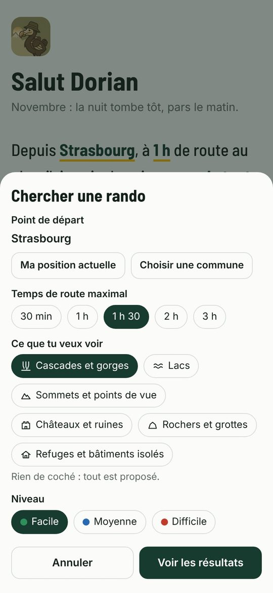
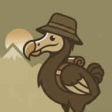
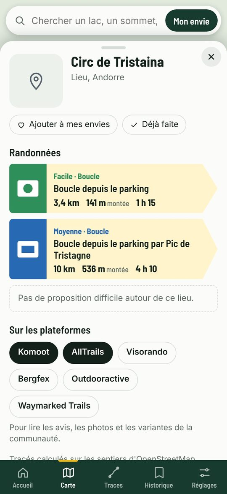
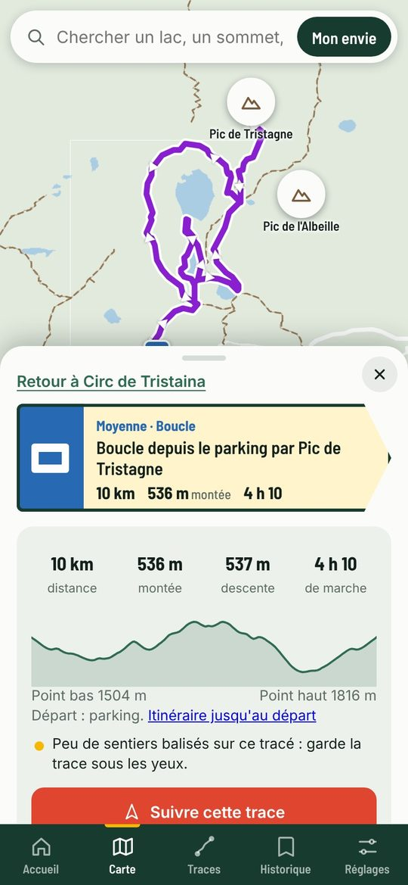
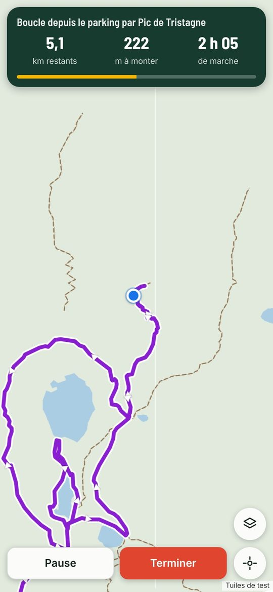
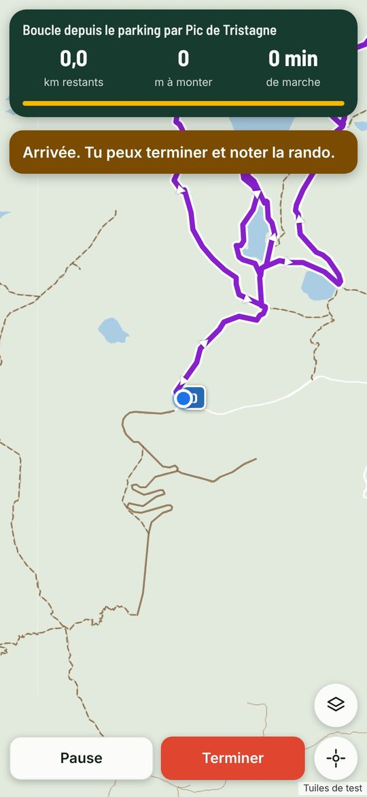

D'où tu pars, combien de temps de route, des lacs, des cascades ou des ruines, et ton niveau : tout se choisit d'un appui, et l'appli te dit tout de suite combien de lieux collent.


Le dodo ne vole pas. Il marche. Et toi ?
230 lieux entre Vosges, Forêt-Noire, Jura et Suisse. Gratuit, sans compte, et la trace marche même sans réseau.
Ce que fait l'appli, dans l'ordre où tu t'en sers.
D'où tu pars, combien de temps de route, des lacs, des cascades ou des ruines, et ton niveau : tout se choisit d'un appui, et l'appli te dit tout de suite combien de lieux collent.

Pour chaque lieu, une proposition par niveau, calculée sur les sentiers. Et les liens vers Komoot, AllTrails ou Visorando pour voir les avis.

La trace sur la carte, la distance, le dénivelé, le temps de marche et le profil. Un bouton envoie la trace dans Organic Maps.

Les kilomètres et la montée qui restent, en direct. Si tu t'écartes, le téléphone sonne. Ça marche sans réseau une fois la trace gardée.

Tes sorties restent dans ton historique. Partage-les avec la bande, et pique-leur leurs idées.
